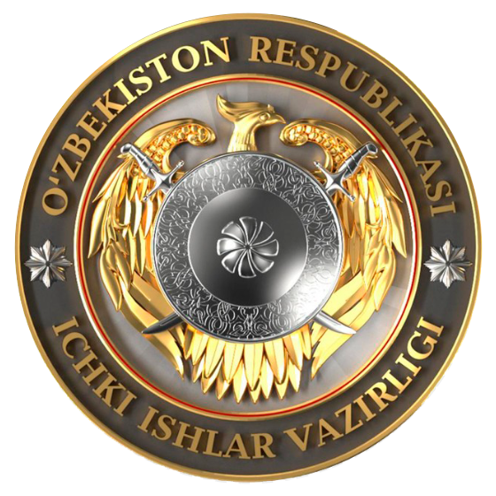

Mavzuni tanlang
Har bir band alohida ochiladi. Tanlangan mavzuga qarab logotipdagi tegishli qism belgilanadi.
Rasmiy hujjatni ko‘rish
Mavzuni tanlang — logotipdagi tegishli joy yoritiladi.
Yo‘lboshchi Mavzuni tanlang, men logotipdagi kerakli joyni ko‘rsataman.
Interaktiv tanishuv
Har bir band alohida ochiladi. Tanlangan mavzuga qarab logotipdagi tegishli qism belgilanadi.
Rasmiy hujjatni ko‘rish